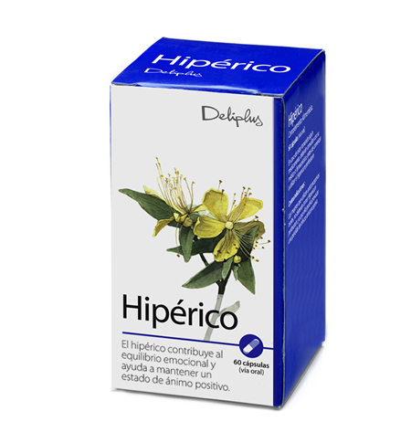

El hipérico es una planta herbácea de la familia de las hipericaceae, que crece de forma silvestre, al borde de los caminos y en ambientes secos y soleados. Las hojas son ovales y presentan lo que a primera vista parecen numerosos agujeritos oscuros, pero que en realidad son las glándulas que contienen aceite esencial y que se presentan traslúcidas a la luz. Florece a partir de mayo con flores de un brillante color amarillo oro.
Una planta con una historia “mágica”. La tradición del hipérico es muy antigua y ya Hipócrates cita su uso como analgésico y contra la ansiedad, así como Plino el Viejo (siglo I d.C.) y Galeno. Además, en la edad antigua se creía que incluso su aroma alejaba a los malos espíritus, por lo que cuando en una ciudad se desencadenaba una epidemia, sus habitantes quemaban ramas de hipérico como sahumerio o las colgaban en los dinteles de las puertas como protección. Dioscórides, a propósito del hipérico, hace también referencia a su poder para ahuyentar a los demonios, “porque los quema y los transforma en trigo”.
Ese uso mágico y protector contra los malos espíritus se prolongó en el tiempo y así encontramos que Piero Andrea Mattioli, famoso médico italiano que vivió en el siglo XVI, cita las propiedades del hipérico para “poner en fuga los demonios” y en el siglo XVII, el médico y botánico holandés Dodonaeus, indica “las sumidades floridas extraídas en vino aromático concentrado por medio de ebullición y bebido muy caliente contra las tensiones causadas por los remordimientos interiores”. En conjunto, el hipérico se utilizaba para curar las más diversas enfermedades, entre ellas lo que era dado en llamar “melancolía”, que San Isidoro de Sevilla describió como “angustia del alma, acumulación de espíritus demoníacos, ideas negras, ausencia de futuro y una profunda desesperanza”, definición que correspondería a lo que hoy conocemos como depresión.
También el uso externo estaba muy extendido y en el siglo XVII, el naturalista y botánico John Gerard lo bautizó como la “hierba de las heridas”. En el Renacimiento se afianzó su uso como cicatrizante basándose en la teoría de los signos (que consistía en atribuir las propiedades medicinales de las plantas en función de su forma) ya que sus hojas parecen llenas de “agujeros” perfectamente cicatrizados.
Diferentes nombres del hipérico
El nombre botánico, Hypericum perforatum L, deriva, según algunos autores, de un vocablo griego que significa imagen, fantasma. Esto daría por sí mismo un significado mágico a la planta, aunque otros lo traducen como “por encima de todo lo imaginable”, aludiendo a sus múltiples virtudes, pues era considerado como una panacea.
Los nombres comunes: era conocido en la Edad Media como “Fuga demonum” (ahuyenta demonios) y traducido al italiano y al francés como scazzia diavoli, o chassediable respectivamente. Recibe también múltiples nombres comunes que vemos repetidos en los distintos idiomas y que derivan de: su nombre botánico (hipérico, perico, pericó); de la morfología de sus hojas (perforada, foradada, etc.), de sus usos (hierba de las heridas, hierba militar, herba de cop)… El nombre más universal es el de Hierba de San Juan, utilizado en prácticamente todos los idiomas, y que hace alusión al tiempo de su recogida, que tiene tradición en ritos mágicos pero que coincide con el tiempo en que la planta florece y contiene mayor cantidad de aceite esencial y otros principios activos.
¿Cómo se usa el hipérico?
La hipericina y la hiperforina que se encuentran concentradas como elementos del hipérico, hacen posible que se rebaje la ansiedad y que con esta plante se traten problemas de ansiedad leve. De todas formas, hay que acudir antes a un especialista y que sea él quien indique si se puede consumir o no.
El hipérico se utiliza principalmente de tres formas: en infusión, en aceite y en capsulas. Tanto la infusión como las capsulas son empleadas cuando se desea aprovechar al máximo todas las propiedades curativas de la planta, principalmente para la depresión y ansiedad. La infusión de hipérico o Flor de San Juan se prepara como cualquier otra infusión: hervir una taza de agua, agregar las hojas y flores, dejar reposar durante algunos minutos y colar. El aceite puede prepararse en casa de forma rápida y sencilla y suele utilizarse como cicatrizante.
El aceite que se extrae del hipérico posee propiedades astringentes que pueden ayudar a tratar las pieles grasas y a darles su nivel adecuado. De esta forma, es posible reducir también este tipo de anomalía, aplicándolo sobre la piel. Igualmente, regenera la piel en caso de heridas o quemaduras.
Su compuesto de hipericina ayuda a terminar con la acidez estomacal, reduciendo los problemas que se derivan de esto: malestar estomacal, digestiones pesadas e incluso vómitos o diarreas.
El limoneno le otorga propiedades diuréticas al hipérico, haciendo posible una eliminación de toxinas y una mejoría en este sentido para todo el que lo consume.
 Capsulas de hipérico.Beneficios del Hipérico
La hierba de San Juan o el hipérico cuenta con muchísimas propiedades que terminan beneficiando al organismo en diversos sentidos; esta es ideal para tratar algunas dolencias que no suelen curarse con remedios farmacéuticos. A continuación, te explico cada una de las situaciones en las que puedes utilizar esta plata:
Contraindicaciones. Es preciso que sepas que consumir hipérico como antidepresivo, puede causar alguna reacción secundaria al mezclarlo con otras pastillas. Las plantas medicinales deben utilizarse con la supervisión de un médico especialista, pues él te otorgará la información ideal para tomarla y conocer el momento perfecto de consumo.